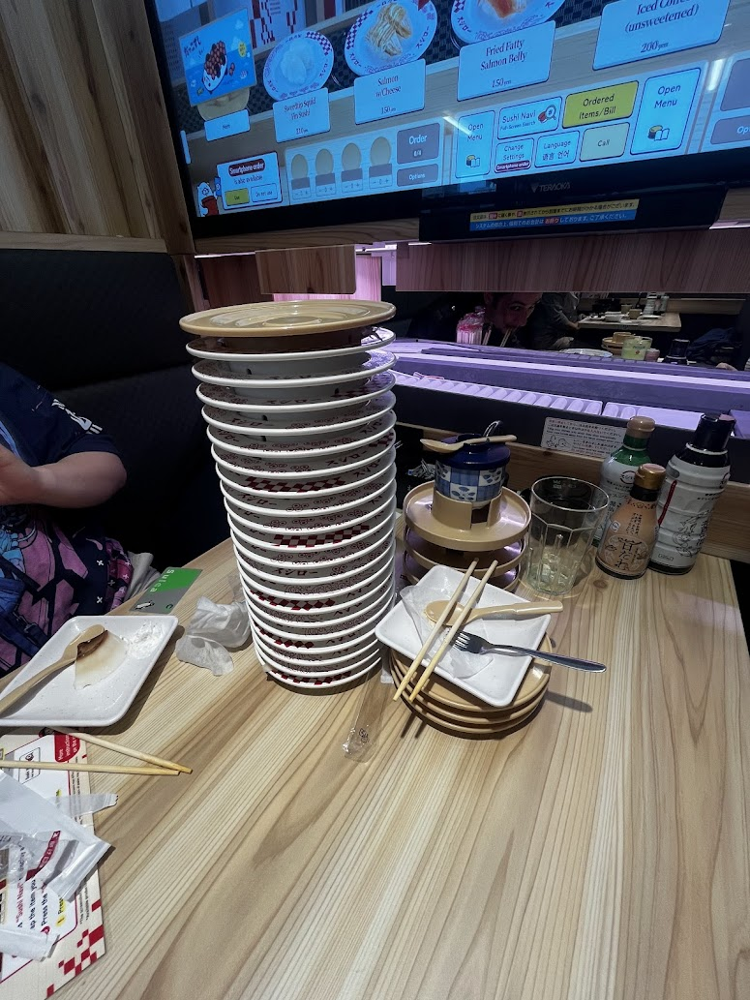
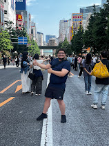
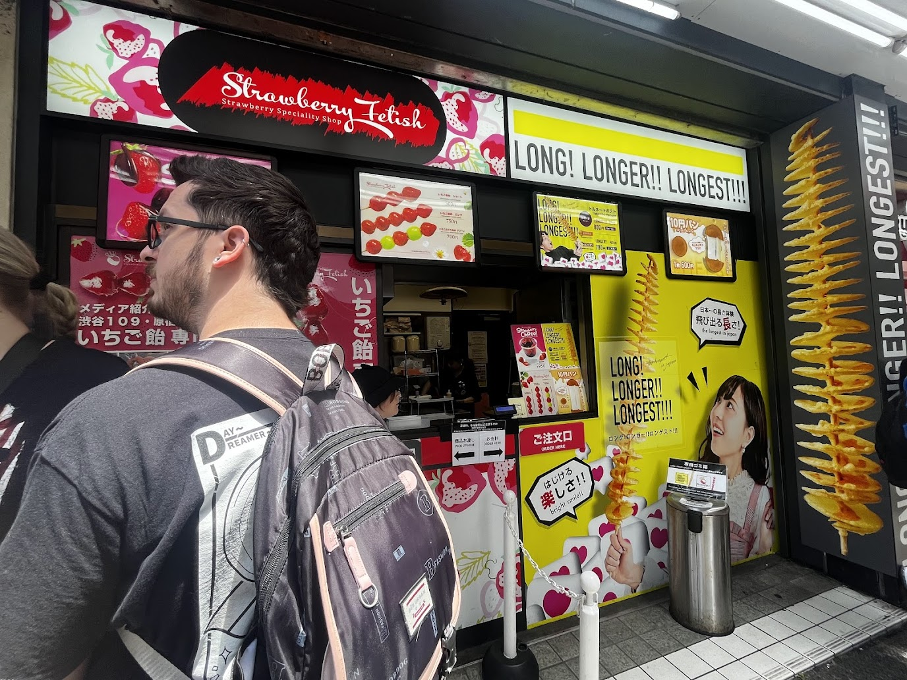
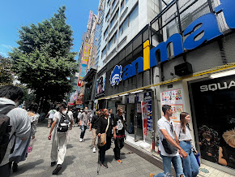
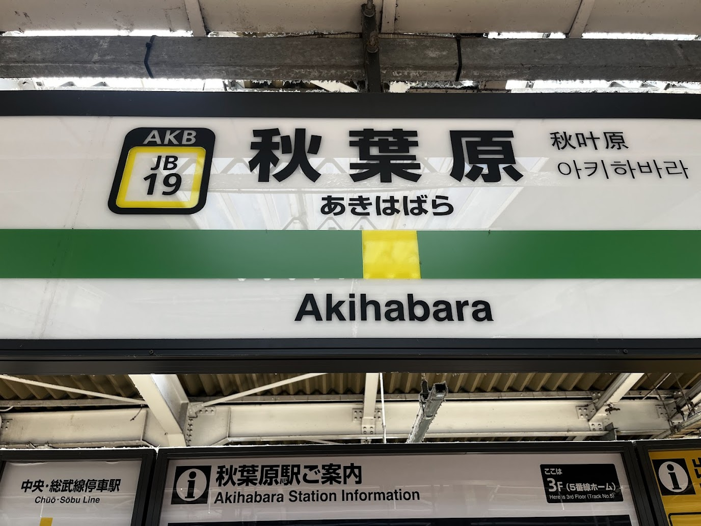

Day 2 – Asakusabashi, Tokyo
This was my first official day in Japan, and it began with a quick trip to the same FamilyMart we visited yesterday. Once again, the convenience and the wide variety of options made for a pleasant experience. It was early in the morning, a time when most people tended to be groggy or unfriendly, but the cheerful and helpful demeanor of the clerk stood out and set a positive tone for the day.
After our first konbini breakfast, we gathered our luggage and belongings from the hotel and began our journey to the first official accommodation of the trip. Although the Japanese train system still felt a bit intimidating, using Google Maps made it incredibly easy to find our platform and identify the correct train to get to our next destination: Akihabara. We were lucky that the train ride was short, and when we arrived at the hotel, the staff greeted us with kindness and hospitality. However, there were a few hiccups with the booking process that caused a minor delay. One of the most memorable issues was that I had somehow been registered as a woman and assigned to the women’s dormitory. Needless to say, I don’t resemble a woman in the slightest, which led to a pretty hilarious encounter that broke the tension.Before the rest of the group arrived at the hostel, we decided to explore the streets of Akihabara and experience the electronics and anime culture we had only seen in YouTube videos. My first impressions were nothing short of euphoric I felt a rush of excitement and happiness as the city exceeded my expectations in every way. From the abundance of restaurants and general stores to the endless anime shops stretching for blocks, to the arcades that nearly hypnotized me into spending all my money on prizes, it was a first impression that truly stuck with me.
We also couldn’t pass up the opportunity to eat at a conveyor belt sushi restaurant in Akihabara. After a satisfying lunch filled with affordable yet high-quality sushi—which easily surpasses any conveyor belt sushi restaurant in the United States we returned to the hostel to meet up with the rest of the group. While there wasn’t much conversation, as most of the group had just endured a long international flight, it was comforting to see everyone arrive safely.Overall, my thoughts on the day are incredibly positive. The transportation system is not only efficient but also user-friendly. The main streets of Akihabara are everything I imagined from the videos I had watched online if not better. The food quality and customer service have already left a strong impression on me, and I felt genuinely welcomed to the country.


